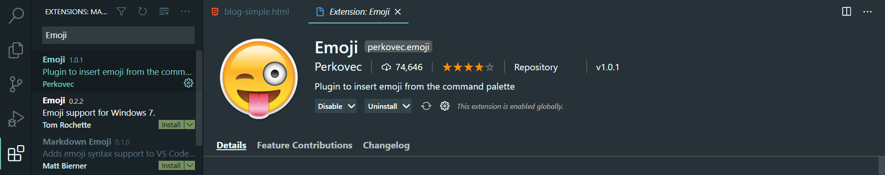
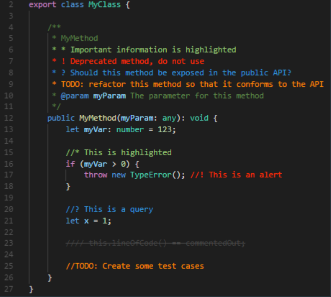

Let's get started with Number one -
1. Discord presence
Now Discord is a really awesome software where you can chat join servers create your own and a whole bunch of stuff. Now often when you a play a game you get it on your status

Now when you are coding with vs code you get this type of status

Now with the Discord presence extension of vs code you can make it look really awesome!

Now it will look something like this -

Are you a fan of emojis then this one is for you!
2. Emoji
Now who dosen't like emojis? they are really cool right? Now there's this extension called Emoji that can give you emojis in vs code
Just go to the extension tab and download the emoji extension.
To use it just hit the F1 key and click on insert emoji and search for your emoji that you want to insert


Now this one is for the lazy ones!
3. Auto rename tag
Now let's say you created an H1

And you want to change it into a h3 now you can do it the old way to first go to here and make it an h3 and then doing it same for the other one. So this is really boring and when you have a lot of tags it becomes a problem that's why meet the AUTO RENAME TAG -

Now you can change that h1 to an h3 with no problem
4. Live Server
Now do you find this annoying to just write some code save it and then go to your browser to refresh it? I do and that's why VS code has this epic extension called LIVE SERVER

After installing it you will see this button over here called live server

And then it's gona open your browser at this port and now you don't need to refresh your page again and again.

5.Better Comments
Improve your code commenting by annotating with alert, informational, TODOs, and more! It's really helpful
